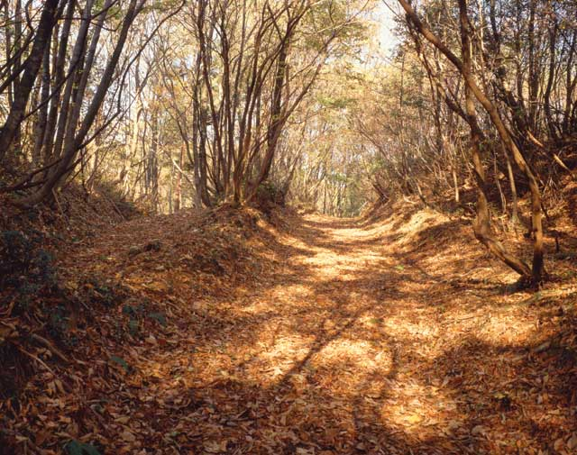
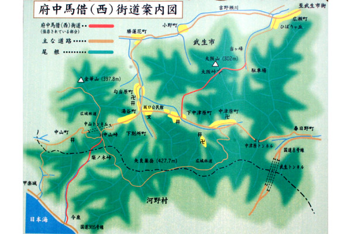

な ： 南越の 港へこの道 府中馬借街道
一言でいうと？
武生と南越前町の港を結ぶ道

府中馬借街道(ふちゅうばしゃくかいどう)とは、中世の頃から江戸時代にかけて、馬で荷物を運ぶ時に使われていた古い道です。
▼府中馬借街道 案内図

どうしてできたの？
都へ行くために、港へ行く道が必要だった
武生から都までは険(けわ)しい山をたくさん越えなければなりませんでしたが、武生から西に、低い山を越えて南越前町に出れば、そこから船で簡単に敦賀に行くことができました。
中・近世になると船による荷運びが盛んになり、武生と南越前町の港を結ぶこの道が重要な街道になってきました。
現在ではこの道で「府中馬借街道トレイルラン」というマラソン大会が行われています。
名前の由来(ゆらい)は？
荷運びについていく人を「馬借」というから
「府中(ふちゅう)」とは昔の越前市をそう呼びます。
「馬借(ばしゃく)」とは荷物運びをする馬について行く人のことです。今でいう運送業者ですね。
そのような人たちが活躍した「街道」なので「府中馬借街道」といいます。
昔の人の地理感覚は本当にすごいですね！山道なので、11月ごろに行くと紅葉がきれいなのではないかなと思います。春にはウォーキングイベントも開催されているそうなのでぜひ行ってみて下さい！